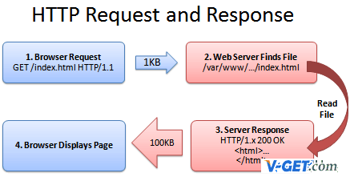
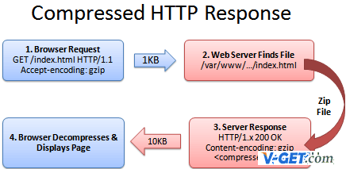
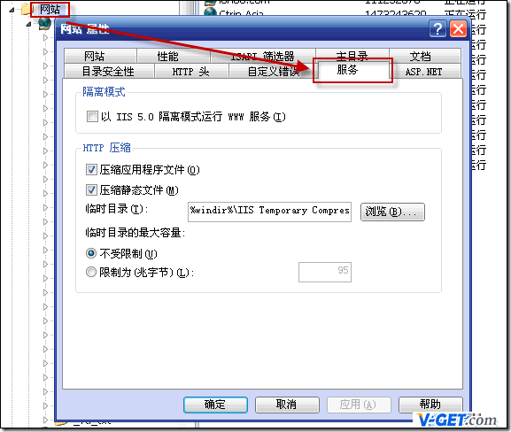
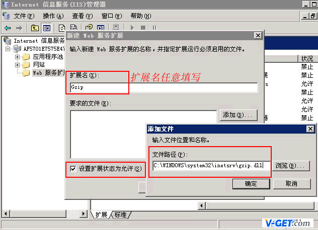
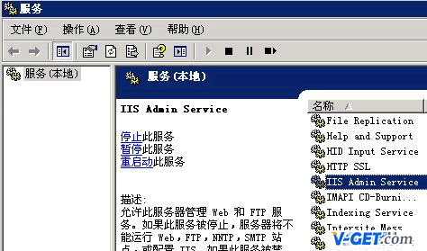

|站长论坛|代理分销|网站开源|手机版
|站长论坛|代理分销|网站开源|手机版网站有个非常常用的内容压缩gzip，无论是在Windows IIS 中，还是在Linux Apache下gzip压缩都是非常有效的。
gzip的好处显而易见，这样经过压缩后实际上降低了网络传输的字节数，最明显的好处就是可以加快网页加载的速度。无论是之前说的精简代码、压缩图片都不如启用Gzip来的实在。这样将加快访问者的访问速度、减轻服务器带宽负担，同时对搜索引擎也可以更快索引文章内容增加搜索引擎的友好度。
网页加载速度加快的好处不言而喻，除了节省流量，改善用户的浏览体验外，另一个潜在的好处是Gzip与搜索引擎的抓取工具有着更好的关系。例如Google就可以通过直接读取gzip文件来比普通手工抓取更快地检索网页。在Google网站管理员工具（Google Webmaster Tools）中你可以看到，sitemap.XML.gz 是直接作为sitemap被提交的。
而这些好处并不仅仅限于静态内容，PHP动态页面和其他动态生成的内容均可以通过使用Apache压缩模块压缩，加上其他的性能调整机制和相应的服务器端缓存规则，这可以大大提高网站的性能。
据统计，gzip命令对文本文件有60%～80%的压缩率。
gzip压缩率一般都是60%-80%之间
如上图，e.v-get.com 官网index.HTML的原始文件大小是55926字节（即56KB），经过gzip压缩后，压缩率竟然高达75.32%，访问该首页，只需加载13802字节（即13.8KB）。这种压缩率是非常高的，网民访问网站的时候，可以减少70%左右的带宽负担，搜索引擎抓取网站内容的时候也可以减少70%的带宽负担，抓取速度比之前更快，所以特别推荐网站管理者要启用gzip压缩设置。
Web服务器处理HTTP压缩的过程如下：
1、 Web服务器接收到浏览器的HTTP请求后，检查浏览器是否支持HTTP压缩（Accept-Encoding 信息）；
2、 如果浏览器支持HTTP压缩，Web服务器检查请求文件的后缀名；
3、 如果请求文件是HTML、CSS等静态文件，Web服务器到压缩缓冲目录中检查是否已经存在请求文件的最新压缩文件；
4、 如果请求文件的压缩文件不存在，Web服务器向浏览器返回未压缩的请求文件，并在压缩缓冲目录中存放请求文件的压缩文件；
5、 如果请求文件的最新压缩文件已经存在，则直接返回请求文件的压缩文件；
6、 如果请求文件是动态文件，Web服务器动态压缩内容并返回浏览器，压缩内容不存放到压缩缓存目录中。

未启用gzip压缩的网站访问过程

启用gzip压缩的网站访问过程
Apache上利用Gzip压缩算法进行压缩的模块有两种：mod_gzip 和mod_deflate。要使用Gzip Web压缩，请首先确定你的服务器开启了对这两个组件之一的支持。在Linux服务器上，现在已经有越来越多的空间商开放了对它们的支持，有的甚至是同时支持这两个模块的。例如目前Godaddy、Bluehost及DreamHosts等空间商的服务器都已同时支持mod_gzip 和mod_deflate。
虽然使用Gzip同时也需要客户端浏览器的支持，不过不用担心，目前大部分浏览器都已经支持Gzip了，如IE、Mozilla Firefox、Opera、Chrome等。
通过查看HTTP头，我们可以快速判断使用的客户端浏览器是否支持接受gzip压缩。
若发送的HTTP头中出现以下信息，则表明你的浏览器支持接受相应的gzip压缩：
Accept-Encoding: gzip 支持mod_gzip
Accept-Encoding: deflate 支持mod_deflate
Accept-Encoding: gzip,deflate 同时支持mod_gzip 和mod_deflate
如果服务器开启了对Gzip组件的支持，那么我们就可以在http.conf或.htaccess里面进行定制，下面是一个.htaccess配置的简单实例：
### mode_gzip 实现gzip压缩 ### <ifModule mod_gzip.c> mod_gzip_on Yes mod_gzip_dechunk Yes mod_gzip_item_include file \\.(html?|txt|css|JS|PHP|pl)$ mod_gzip_item_include handler ^cgi-script$ mod_gzip_item_include mime ^text/.* mod_gzip_item_include mime ^application/x-javascript.* mod_gzip_item_exclude rspheader ^Content-Encoding:.*gzip.* </ifModule> ## 里面的文件mime类型可以根据自己情况添加，至于PDF 、图片、音乐文档之类的这些本身都已经高度压缩格式，重复压缩的作用不大，反而可能会因为增加CPU的处理时间及浏览器的渲染问题而降低性能。所以就没必要再通过Gzip压缩。 ### mode_deflate 实现gzip压缩 ### <ifmodule mod_deflate.c> DeflateCompressionLevel 6 #压缩率, 6是建议值. AddOutputFilterByType DEFLATE text/plain AddOutputFilterByType DEFLATE text/html AddOutputFilterByType DEFLATE text/XML AddOutputFilterByType DEFLATE text/css AddOutputFilterByType DEFLATE text/javascript AddOutputFilterByType DEFLATE application/xhtml+XML AddOutputFilterByType DEFLATE application/XML AddOutputFilterByType DEFLATE application/RSS+XML AddOutputFilterByType DEFLATE application/atom_XML AddOutputFilterByType DEFLATE application/x-javascript AddOutputFilterByType DEFLATE application/x-httpd-PHP AddOutputFilterByType DEFLATE image/svg+XML </ifmodule>
通过以上设置后再查看返回的HTTP头，出现以下信息则表明返回的数据已经过压缩。即网站程序所配置的Gzip压缩已生效。
Content-Encoding: gzip
注：不管使用mod_gzip 还是mod_deflate，此处返回的信息都一样。因为它们都是实现的gzip压缩方式。
除此之外，还可以通过一些在线检测工具（如：http://e.v-get.com/tool/）来检测你的网站内容是否已经过gzip压缩。
首先一个区别是安装它们的Apache Web服务器版本的差异。Apache 1.x系列没有内建网页压缩技术，所以才去用额外的第三方mod_gzip 模块来执行压缩。而Apache 2.x官方在开发的时候，就把网页压缩考虑进去，内建了mod_deflate 这个模块，用以取代mod_gzip。虽然两者都是使用的Gzip压缩算法，它们的运作原理是类似的。
第二个区别是压缩质量。mod_deflate 压缩速度略快而mod_gzip 的压缩比略高。一般默认情况下，mod_gzip 会比mod_deflate 多出4%~6％的压缩量。
那么，为什么使用mod_deflate？第三个区别是对服务器资源的占用。一般来说mod_gzip 对服务器CPU的占用要高一些。mod_deflate 是专门为确保服务器的性能而使用的一个压缩模块，mod_deflate 需要较少的资源来压缩文件。这意味着在高流量的服务器，使用mod_deflate 可能会比mod_gzip 加载速度更快。
不太明白？简而言之，如果你的网站，每天不到1000独立访客，想要加快网页的加载速度，就使用mod_gzip。虽然会额外耗费一些服务器资源，但也是值得的。如果你的网站每天超过1000独立访客，并且使用的是共享的虚拟主机，所分配系统资源有限的话，使用mod_deflate 将会是更好的选择。
另外，从Apache 2.0.45开始，mod_deflate 可使用DeflateCompressionLevel 指令来设置压缩级别。该指令的值可为1至（压缩速度最快，最低的压缩质量）9（最慢的压缩速度，压缩率最高）之间的整数，其默认值为6（压缩速度和压缩质量较为平衡的值）。这个简单的变化更是使得mod_deflate 可以轻松媲美mod_gzip 的压缩。
对于没有启用以上两种Gzip模块的虚拟空间，还可以退而求其次使用php的zlib函数库（同样需要查看服务器是否支持）来压缩文件，只是这种方法使用起来比较麻烦，而且一般会比较耗费服务器资源，请根据情况慎重使用。
Linux 空间不支持mod_gzip、mod_deflate模块，若想通过GZIP压缩网页内容，可以考虑两种方式，开启zlib.output_compression或者通过ob_gzhandler编码的方式。
zlib.output_compression是在对网页内容压缩的同时发送数据至客户端，ob_gzhandler是等待网页内容压缩完毕后才进行发送，相比之下前者效率更高，但需要注意的是，两者不能同时使用，只能选其一，否则将出现错误。
下文仅针对GoDaddy Deluxe Hosting – Linux 空间，对两者的实现方式做简单描述。
在默认情况下，zlib.output_compression是关闭的，如需开启需编辑 php5.ini 文件，加入以下内容：
zlib.output_compression = On zlib.output_compression_level = 6
然后将php5.ini上传到FTP根目录下，剩下的事请就是等待它生效，这可能需要一段时间，可以通过phpinfo()函数检测结果：
Directive Local Value Master Value zlib.output_compression On On zlib.output_compression_level 6 6
当zlib.output_compression的Local Value和MasterValue的值同为On时，表示已经生效，这时候访问的PHP页面（包括伪静态页面）已经GZIP压缩了，通过Firebug或者在线网页GZIP压缩检测工具可检测到压缩的效果。
如果需要使用ob_gzhandler，则需关闭zlib.output_compression，把php5.ini文件内容更改为：
zlib.output_compression = Off zlib.output_compression_level = -1
ob_gzhandler是GoDaddy官网推荐的用法，通过在PHP文件中插入相关代码实现GZIP压缩，以下是GoDaddy帮助中心所提到的，将以下PHP代码加入到PHP文件顶部，即可实现GZIP压缩。
<?php
if (substr_count($_SERVER['HTTP_ACCEPT_ENCODING'], 'gzip'))
ob_start("ob_gzhandler");
else
ob_start();
?>
不管是zlib.output_compression还是ob_gzhandler，都仅能对PHP文件进行GZIP压缩，对于HTML、CSS、JS等静态文件只能通过调用PHP的方式实现。
第一步：打开IIS，启用HTTP压缩服务

打开IIS，启用HTTP压缩服务
右击“网站”->“属性”，选择“服务”。在“HTTP压缩”框中选中“压缩应用程序文件”和“ 压缩静态文件”，按需要设置“临时目录”和“临时目录的最大限制”;

启用web服务
开始 > 运行中输入 c:\Windows\system32\inetsrv，找到 MeteBase.XML，先备份，在修改。（有的服务器不需要修改此文件便可以使用）
搜索 Location ="/LM/W3SVC/Filters/Compression/gzip"
仔细核对并替换下代码：
<IIsCompressionScheme Location ="/LM/W3SVC/Filters/Compression/deflate" HcCompressionDll="%windir%\\system32\\inetsrv\\gzip.dll" HcCreateFlags="0" HcDoDynamicCompression="TRUE" HcDoOnDemandCompression="TRUE" HcDoStaticCompression="FALSE" HcDynamicCompressionLevel="0" HcFileExtensions="htm html txt" HcOnDemandCompLevel="10" HcPriority="1" HcScriptFileExtensions="asp dll exe" > </IIsCompressionScheme> <IIsCompressionScheme Location ="/LM/W3SVC/Filters/Compression/gzip" HcCompressionDll="%windir%\\system32\\inetsrv\\gzip.dll" HcCreateFlags="1" HcDoDynamicCompression="TRUE" HcDoOnDemandCompression="TRUE" HcDoStaticCompression="TRUE" HcDynamicCompressionLevel="0" HcFileExtensions="htm html txt" HcOnDemandCompLevel="10" HcPriority="1" HcScriptFileExtensions="asp dll exe" > </IIsCompressionScheme>
将以上代码替换成gzip压缩
<IIsCompressionScheme Location ="/LM/W3SVC/Filters/Compression/gzip" HcCompressionDll="%windir%\\system32\\inetsrv\\gzip.dll" HcCreateFlags="1" HcDoDynamicCompression="TRUE" HcDoOnDemandCompression="TRUE" HcDoStaticCompression="TRUE" HcDynamicCompressionLevel="10" HcFileExtensions="html css js htm XML txt" HcOnDemandCompLevel="10" HcPriority="1" HcScriptFileExtensions="php dll" > </IIsCompressionScheme> <IIsCompressionScheme Location ="/LM/W3SVC/Filters/Compression/deflate" HcCompressionDll="%windir%\\system32\\inetsrv\\gzip.dll" HcCreateFlags="2" HcDoDynamicCompression="TRUE" HcDoOnDemandCompression="TRUE" HcDoStaticCompression="TRUE" HcDynamicCompressionLevel="10" HcFileExtensions="html css js htm XML txt" HcOnDemandCompLevel="10" HcPriority="1" HcScriptFileExtensions="php dll" > </IIsCompressionScheme>
修改好后，在服务中停止IIS Admin Service 服务。

服务中停止IIS Admin Service 服务
然后在保存MeteBase.XML，保存好后再启动IIS。这样Gzip压缩就启用成功了。
最后，测试Gzip压缩是否成功，可以到站长工具http://e.v-get.com/tool/进行检测。
最后想说的是，现在主流的浏览器默认使用的是HTTP1.1协议，基本都支持GZIP压缩，对于IE而言，假如你没有选中其菜单栏工具-》Internet 选项-》高级-》HTTP 1.1 设置-》使用 HTTP 1.1，那么，你将感受不到网页压缩后的速度提升所带来的快感！